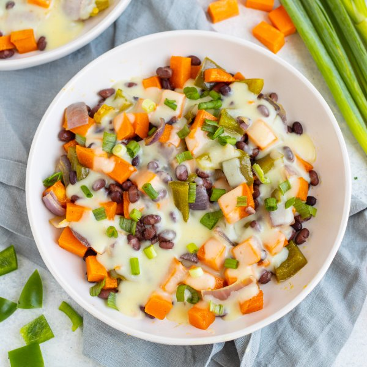

Black Bean, Sweet Potato, Bell Pepper & Onion Bake with Cheese Sauce

Total Time
35 min
Nutrition (per serving)
667.8 kcalCalories
27.7 gProtein
85.9 gCarbs
25.6 gFat
Full nutrition table
| Calories | 667.8 kcal |
| Total fat | 25.6 g |
| Saturated fat | 6.6 g |
| Trans fat | 0.2 g |
| Cholesterol | 24 mg |
| Sodium | 827 mg |
| Carbohydrates | 85.9 g |
| Fiber | 22.2 g |
| Sugars | 13.7 g |
| Protein | 27.7 g |
| Potassium | 1571 mg |
| Calcium | 364.3 mg |
| Iron | 5.8 mg |
| Vitamin A | 25016.5 IU |
| Vitamin C | 107.7 mg |
| Vitamin D | 4.5 IU |
Cookware
Ingredients
- 2 (15 oz) cansblack beans
- 16 fl ozchicken or vegetable broth
- 4green bell peppers
- 1 small bunchgreen onions (scallions)
- ½ (8 oz) blockmozzarella cheese
- ½ cupplain Greek yogurt
- 1 mediumred onion
- 1 ½ lbsweet potatoes
- all-purpose flour
- black pepper
- coriander, ground
- extra virgin olive oil
- salt
Steps
- Preheat oven to 425°F.
- Wash and dry the fresh produce.4 green bell peppers
1 ½ lb sweet potatoes
1 small bunch green onions (scallions) - Trim, seed, and medium dice bell peppers; place in a medium bowl.
- Peel and cut sweet potatoes into ½-inch cubes; add to the bowl with the bell pepper.
- Peel, halve, and large dice onion. Add to the bowl along with oil, salt, and pepper; toss to combine, transfer to a large baking sheet pan, and spread out in an even layer.1 medium red onion
2 tbsp extra virgin olive oil
1 tsp salt
¼ tsp black pepper - Place baking sheet in the oven (it doesn't have to be fully heated) and roast, stirring halfway through, until veggies are golden brown and fork-tender, about 20 minutes.
- Meanwhile, coarsely grate mozzarella and set aside.½ (8 oz) block mozzarella cheese
- Preheat a medium saucepan over medium heat. Once the pan is hot, add oil and flour; whisk until combined, about 1 minute.3 tbsp extra virgin olive oil
3 tbsp all-purpose flour - Add broth and spices to the pan; cook, whisking frequently, until thickened, 3-4 minutes.16 fl oz (2 cups) chicken or vegetable broth
1 tsp salt
1 tsp coriander, ground
¼ tsp black pepper - Add mozzarella and yogurt to the pan; whisk until cheese is melted and combined. Cover sauce and set over low heat, stirring occasionally, to keep warm.½ cup plain Greek yogurt
- Drain and rinse beans in a colander.2 (15 oz) cans black beans
- When the veggies are done, remove from the oven, add beans, and stir to combine. Return baking sheet to the oven and bake until beans are warmed through, 2-3 minutes more; remove from oven.
- Meanwhile, trim green onions and cut crosswise into ¼-inch pieces.
- To serve, divide roasted veggies and beans between bowls; top with cheese sauce and green onions. Enjoy!